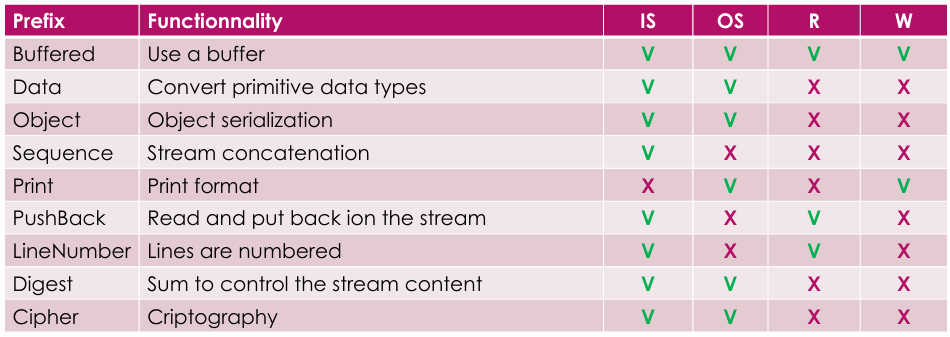

PROJ832 - Flux de données et accès concurents
1 - Entrée/Sortie (I/O)
- Abstraction des flux de données
- On peut filtrer les flux (crypter, inverser... askip comme des décorateurs Java)
Un programme = un fichier qui prend une entrée (au début ou pendant l'exécution) et produit une sortie (à la fin ou pendant l'exécution).
Entrée/Sortie : ensemble des interactions qui sont faites pour recevoir et produire des données (quel que soit leur type)
Différents types d'intéractions :
- Par des fichiers (write/read)
- Message réseau (send/receive)
- Définition d'une variable (set/get)
- Mise à jour d'un string (update/read)
Différents classes d'I/O en Java :
- Flux de données de base (flux dirigé, types de données prédéfinis, utilisé dans les autres classes)
- Constructeurs (utilise un moyen particulier (file, table, string, pipe...))
- Filtres (avec une fonction (buffer, serialisation, compression...))
Récupérer le flux :
- Accesseur - Flux déjà existant (System.in, System.out, System.err)
- Constructeur - Créer un flux (FileInputStream, FileOutputStream, FileReader, FileWriter)
Filtres de flux :
- Appelés (BufferedInputStream par ex.)
- Prend un flux en paramètre
- Extends Filter qui étend
- Liste des filtres de base :

(ici, IS = InputStream, OS = OutputStream, R = Reader, W = Writer)
2 - Interaction patterns
Plusieurs types d'interactions :
- Modèle réseau : client/serveur, peer-to-peer
- Producteur/consommateur
- Publish/subscribe
- Workflows, Dataflows (gère comment les données pensent entre les différents acteur) : pipeline, map reduce
Client/serveur :
- Comportement de base d'internet
- Un serveur qui attend des requêtes et des clients qui les envoient
- Permet de distribuer les tâches (serveur = centralisation des données)
- Quand le client attend une réponse du serveur, il se bloque. Idem pour le serveur qui attend une requête du client.
- Dans les faits, le multithreading est utilisé pour éviter le blocage (chez le client et le serveur)
- Configurations possibles :
- 1 serveur, N clients
- M serveurs, 1 clients
- M serveurs, N clients
- Un serveur peut être aussi un client (ex. SGBD, mail...)
Peer-to-peer :
- Un noeud peut être un client et/ou un serveur : scalabilité et fiabilité
- Topologies variées : flat, ring (DHT), hiérarchique...
Producteur/consommateur :
- Plusieurs paradigmes de programmation :
- centralisé : avec des variables globales et des sémaphores
- distribué : avec des files de messages (message queue)
- Le producteur produit une ressource
- Le consommateur consomme la ressource
- Plusieurs configurations possibles :
- M producteurs, N consommateurs (M>=1, N>=1)
- Chaque ressource peut être consommée 1, 2,...N fois selon les besoins
Publish/subscribe :
- Un peu comme le producteur/consommateur mais avec des canaux de communication
- Un éditeur publie un message
- Un abonné est notifié de la publication
Workflows, Dataflows :
- D'après wikipedia : "Un workflow est une représentation d'une suite de tâches à effectuer, d'opérations effecuées par des personnes..."
- Peut être représenté comme un graphe orienté acyclique (DAG), un réseau de Petri... et beaucoup utilisé en Big Data
- Types de workflow simple :
- Pipeline : chaque tâche est exécutée en série. Les données peuvent mettre du temps à faire le tour du pipeline mais chaque tâche est faite en série donc après une tâche, on peut être sûr que la suivante est instantanée.
- Map Reduce : chaque tâche est exécutée en parallèle. Les données sont divisées en plusieurs parties et chaque partie est traitée en parallèle. Les résultats sont ensuite combinés. (voir dans le cours de Big Data). Mais attention, ça marche pas pour tout (ex. tri).
3 - Asynchronisme et fautes
Noeud unique contre noeuds multiples :
- Noeud unique :
- Fautif ou pas fautif, c'est simple
- Tolérance aux fautes : Simple mécanisme de checkpoint
- Système distribué :
- Peut être partiellement fautif (noeud fautif)
Détection des fautes :
- Déterminer si un noeud est fautif ou non (avec des ping/pong, des heartbeat... où il faut déterminer une durée de timeout)
- Une bonne détection des fautes doit être précise et éviter les faux positifs
Tolérance aux fautes :
- Généralement basé sur la redondance (réplication de données, codes d'effacement, RAID, réplication de job, checkpoints distribués, logs...)
4 - Méthodes de communication
RPC (Remote Procedure Call) :
- Appel de procédure à distance
- Les systèmes distribués sont chiants à programmer et les développeurs veulent juste appeler une fonction comme si elle était locale (RPC permet ça)
- Problèmes de RPC : fautes, héterogénéité (langage, système, hardware...), pas de mémoire partagée, versioning...
- Basé sur la génération de code comme ça :
- Client :
- Prépare les paramètres
- Localiser le serveur
- Faire l'appel (requete client/serveur)
- Attendre la réponse
- Décoder le résultat
- Serveur au démarrage :
- S'enregistrer auprès d'un serveur de nom
- Attendre une requête
- Serveur lors d'une requête :
- Décoder les paramètres
- Appeler la bonne procédure
- Coder le résultat
- Envoyer le résultat
CORBA (Common Object Request Broker Architecture) :
- RPC amélioré qui peut utiliser des objets
- Basé sur un IDL (Interface Definition Language) qui permet de définir les interfaces des objets
- Appels de métthodes sur des objets distants (génération de code : stubs et skeletons)
RMI (Remote Method Invocation) :
- Pareil que CORBA mais pour Java (c'est celui qu'on va le plus utiliser apparemment)
- Offre des fonctionalités de résolution de nom, d'activation d'objets (permet d'endormir un objet et de le réveiller plus tard) et de gestion de la mémoire (garbage collector)
4 - Concurrence en Java
(c'est des fonctions dans le diapo, je vais pas tout recopier mdr)